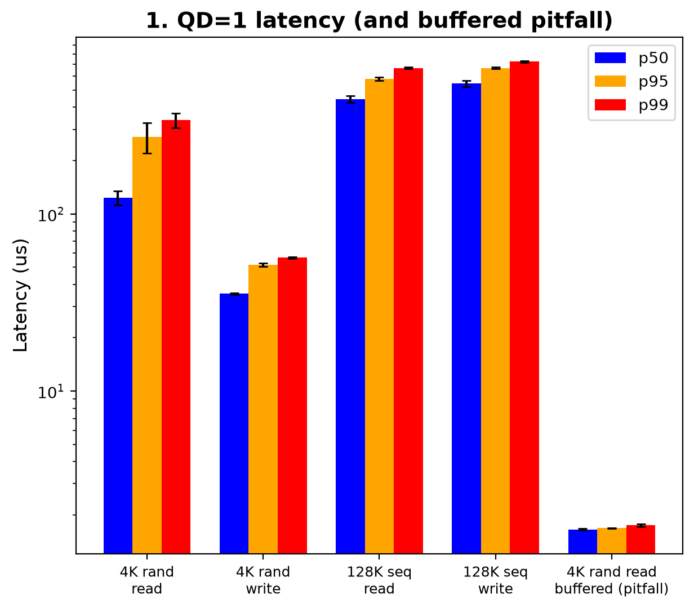
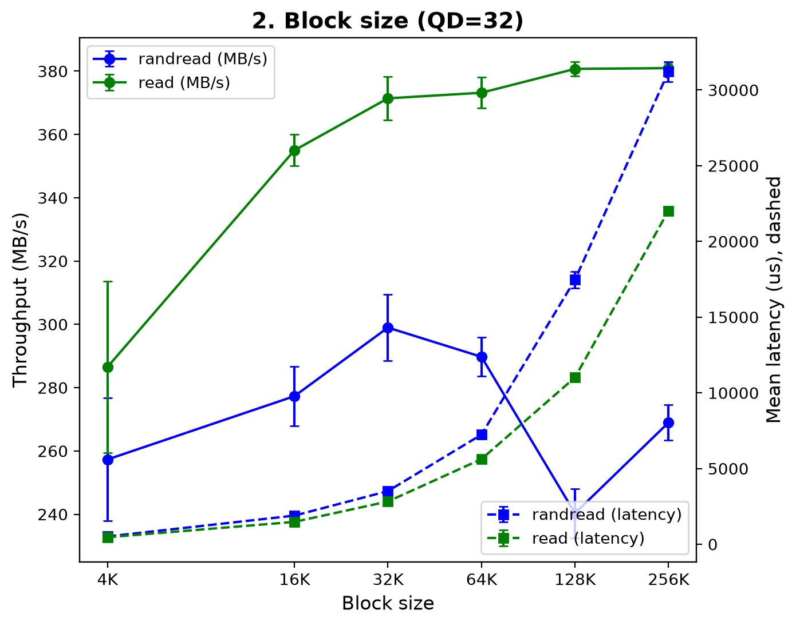
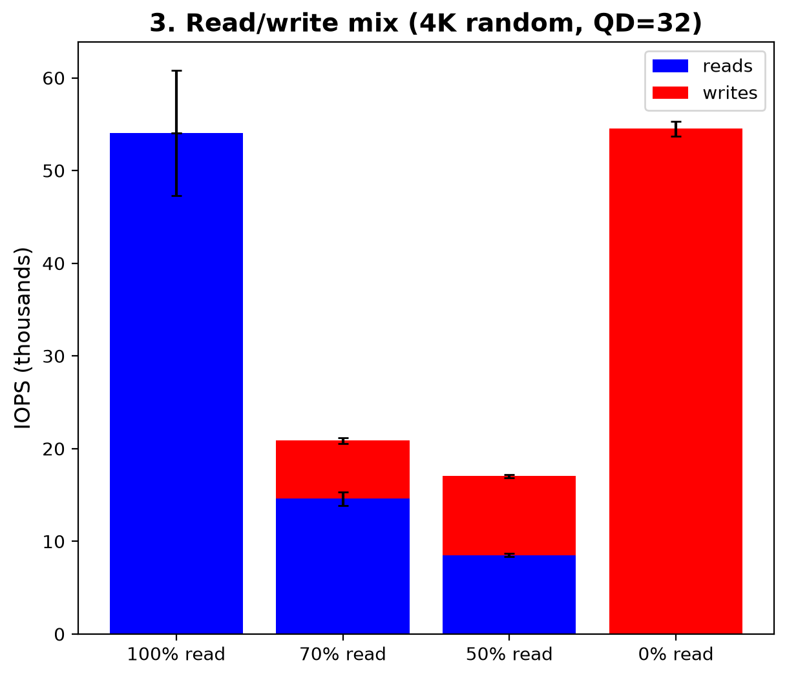
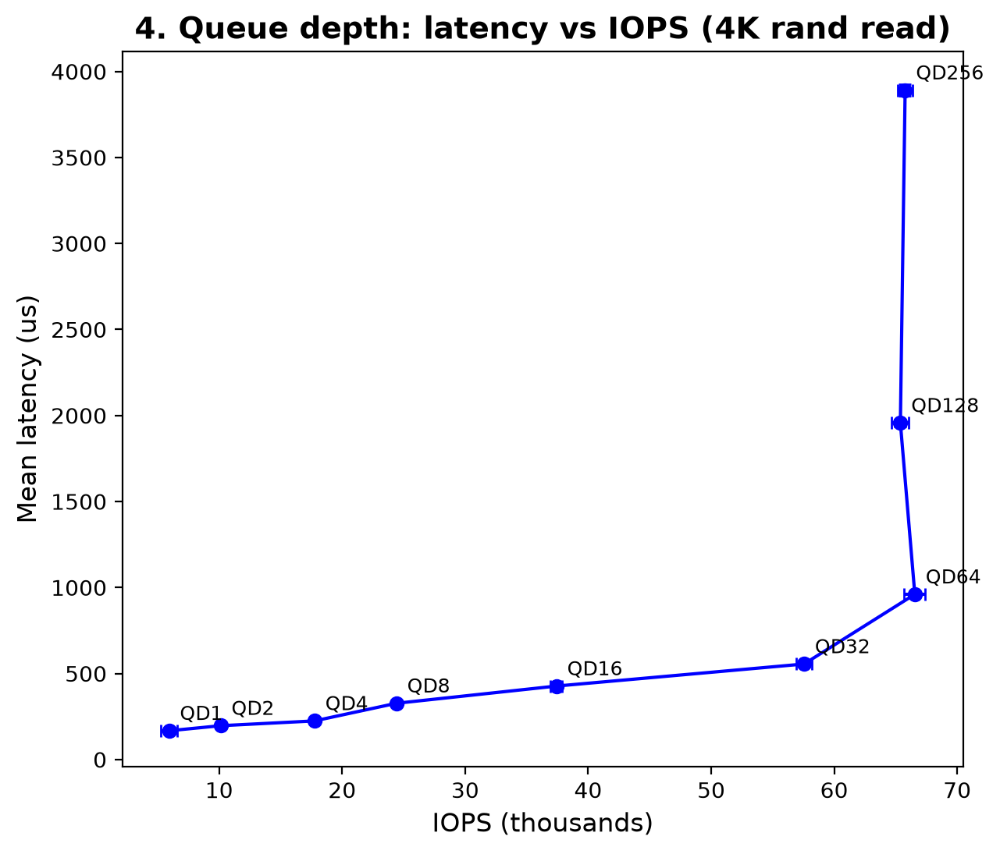
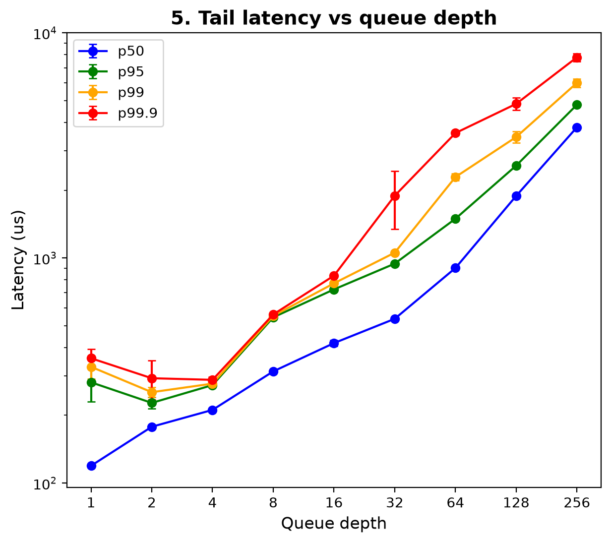
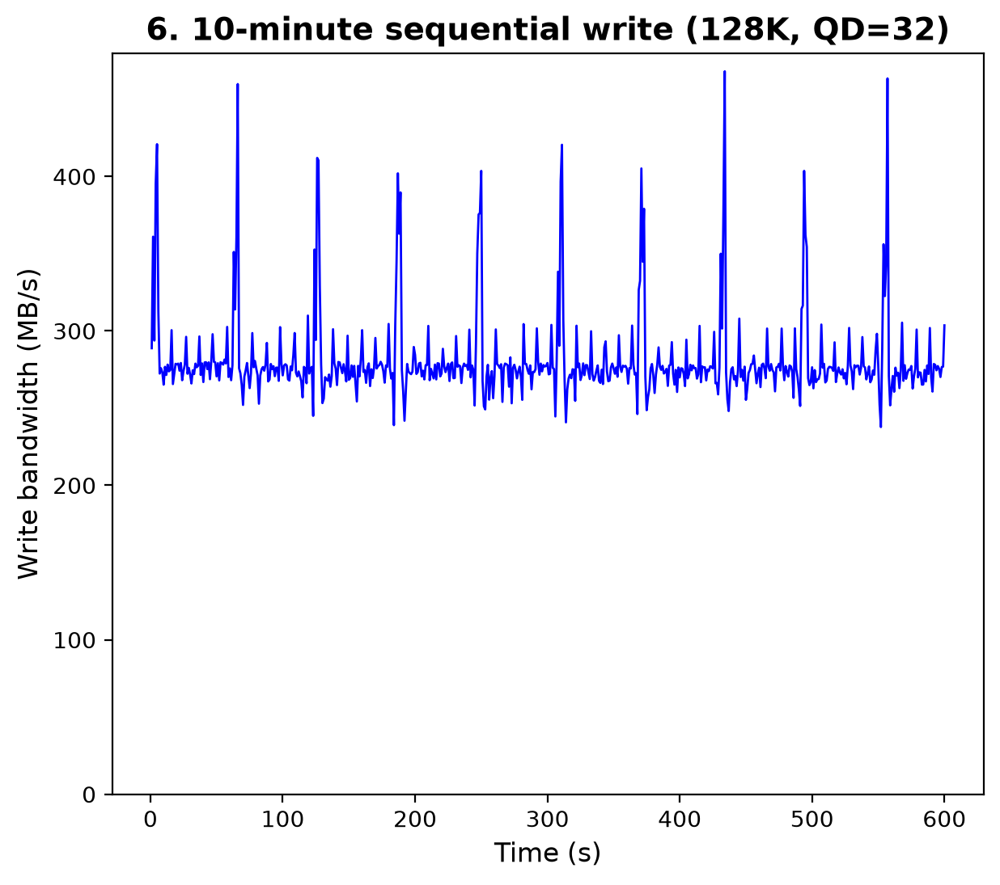

Project 3: SSD Performance Profiling
ECSE 4320/6320 Advanced Computer Systems · SATA SSD · fio 3.37
1. Setup and methodology
30 + 25 pts · Safety · Reproducibility and data hygiene| SSD | SATA SSD, 223.6 GB (sda); SATA interface (~550–600 MB/s limit, NCQ queue depth 32) |
|---|---|
| Safety | Tests run on a 16 GB file (testfile, ~7% of the drive) on ext4/LVM, never the raw device, so no existing data is at risk |
| I/O settings | fio 3.37, libaio, --direct=1 (bypasses page cache) for every test except the pitfall; random offsets aligned to block size |
| Data pattern | Incompressible (--refill_buffers, fresh random data every write) |
| Preconditioning | Whole 16 GB file written once sequentially (1 MiB, QD 32) before the tests |
| Runs | 15 s + 2 s ramp; 3 reps (mean ± std), except the preconditioning fill and the 10-minute write (1 run each); numjobs=1, parallelism through iodepth |
| Sanity checks | The QD 1 baseline and the QD 1 point of the queue-depth sweep agree (5,985 vs 5,927 IOPS); IOPS × latency = queue depth (Little's Law) at every point |
| Host | Intel Core i3-6100U; Ubuntu, Linux 6.11.0-29-generic |
| Temperature | Not available on this drive |
2. Hypothesis
- Writes will be slower than reads, because the drive has to make sure the data is actually written
- Bigger blocks will give more MB/s, because each request passes more data at the same time
- More requests at once will help, up until the number of requests maxes out the SSD's bandwidth
3. Zero-queue (QD = 1) baselines
30 pts · Safety and zero-queue baselines
| Test | IOPS | p50 (µs) | p95 | p99 | p99.9 |
|---|---|---|---|---|---|
| 4K random read | 5,985 ± 1,120 | 123 | 273 | 338 | 399 |
| 4K random write | 18,842 ± 255 | 35 | 52 | 57 | 198 |
| 128K sequential read | 1,775 ± 42 | 446 | 580 | 668 | 1,330 |
| 128K sequential write | 1,200 ± 79 | 544 | 668 | 725 | 7,406 |
Interestingly, writes are sometimes faster than reads (4K writes 35 µs vs 4K reads 123 µs), so I was wrong about my hypothesis. This could be because the drive puts writes in a fast cache first.
4. Block-size sweep
35 pts · Block-size and pattern sweeps
- Small-block limit: 4K random read 62,815 IOPS (257 MB/s)
- Sequential tops out at 381 MB/s from 128K up
- Mean latency: ~0.5 ms at 4K → 22–31 ms at 256K
A bigger block size helps throughput for a normal sequential read, up to a limit of about 381 MB/s. For random reads it only helps up to 32K and then drops. The latency goes up in general, because each request carries more data.
5. Read/write mix
40 pts · Read/write and queue-depth analysis
- Total IOPS: 100% read 54.1K · 70% 20.9K · 50% 17.0K · 0% read 54.5K
- Mean latency at 70% reads: reads 1,138 µs, writes 2,456 µs (vs ~590 µs for either pure workload)
Pure reads and pure writes are more or less the same, not much different in I/O operations. Mixing them is a lot slower though, with about 3× fewer IOPS.
6. Queue-depth sweep and knee
40 pts · Read/write and queue-depth analysis
- Knee at QD 32–64: IOPS stops at ~66K; after that latency doubles with each doubling of QD (961 → 1,957 → 3,891 µs)
- Little's Law, L = IOPS × mean latency: QD 32 → 57,549 × 555 µs = 32.0; QD 256 → 65,767 × 3,891 µs = 255.9 (matches QD at every point)
More requests at once help until about QD 32–64, where IOPS stops at about 66K (the knee). After that the requests just wait in line, so latency keeps going up, probably because SATA only takes 32 requests at a time. Little's Law (IOPS × latency = queue depth) matches the data at every point.
7. Tail latency
25 pts · Tail latency and device state
- Mid QD (16): p50 418 · p99 771 · p99.9 834 µs (p99.9/p50 = 2.0×)
- Near knee (32): p50 537 · p99 1,055 · p99.9 1,890 µs (3.5×)
- Past knee (64): p50 902 · p99 2,288 · p99.9 3,588 µs (4.0×)
Bigger queue, more latency for the tail. This makes sense since the tail requests are further and further back in the line.
8. Device state and working set
25 pts · Tail latency and device state
- Mean 281 MB/s; first minute 284 vs last minute 280 MB/s: no cliff (no visible SLC-cache exhaustion)
- Short bursts to ~400–470 MB/s about every 61 s
- LBA range: all tests use the same 16 GB range (~7% of the drive)
The write speed stayed at about 280 MB/s for the whole 10 minutes, so the drive didn't slow down. There are short spikes about every 61 seconds, and I'm not sure why.
9. Misleading setup: buffered I/O
15 pts · AI-use transparency and pitfall analysis| 4K random read, QD 1 | IOPS | p50 (µs) | p99 (µs) |
|---|---|---|---|
Buffered (1 GB file already in RAM, no --direct) | 209,251 | 1.7 | 1.7 |
| Direct I/O (real SSD) | 5,985 | 123 | 338 |
Without direct=1, the file was read from RAM instead of the SSD, so it looks about 35× faster than it really is. That's why the other tests use direct=1.
10. Limitations
- One consumer SATA drive, which is also the OS disk (background I/O possible)
- Filesystem file, not raw device; 16 GB range only
- No temperature or SMART data; reads only in the block-size sweep
11. AI-use note
15 pts · AI-use transparencyAI use for all three projects is described in one shared note: AI_USE_NOTES.md at the top of the repository.